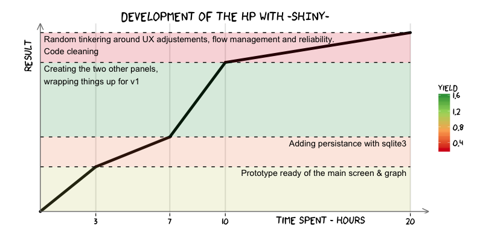

No, this app is not secure, and is not meant to be. More on that later, but you should be aware that the "passwords" are not hashed at any point. Use the web-app and re-use the code responsibly.
The goal of this web-app is to have participants of a hackathon quickly share what (they think) their skills are, and efficiently look for other hackers. It is also a showcase of what can be done with Shiny relatively quickly.
I took part in the - amazing - Bayes Impact Hackathon in SF on November 15/16, and was a bit frustrated by the inability to team up efficiently if you didn't know personally some people going there. I came up - in my shower, as usual - with the idea of an open "hacker profiler" a couple of days before the start of the hackathon. I hacked away a rougher version of this prototype that I quickly presented at the beginning of the weekend. The solution came too late to be really useful this time, but many people showed interest in it and asked me to share it, so I went back clean up things, and here we are!
This also part of the why: I was playing with Shiny, a template language for quick web-development in R. I wanted to see if I could implement what I had in mind using this new tool. It looked well quickly enough that I wanted to create a user-ready prototype of it.
Below is a quick - & honest - sketch on how it went:
As you can see, I've not always been lightning fast. It comes from two very different issues. First, I am (or was) not so much of an expert in Shiny, so my advanced R knowledge and basic Shiny experience were challenged by some parts of the project. Time here includes learning & figuring out stuff + sysop fun. Second, Shiny is pretty bad at doing some things like persistence (I had to develop a simplistic "backend" myself) and debugging. This last point is crucial, as sometimes development speed is really, really, decreased because debugging tools are non-existent or not straightforward to use. This can be a problem for the development of applications whose complexity lies not only in the ported R code.
Yet, it is possible: it might not be the perfect framework to develop such a webApp, but at least it is doable in Shiny. I am glad to know that anything I want to quickly share with friends & colleagues can be done so easily, without touching any classic web-tool. In addition, Shiny is quite intensively developed currently, and will only get better.
I'd like to develop more "Ry" features that can quickly been implemented on the top of the existing data, like a summary pane describing the population of registered hackers.
More on the engineering side, the two panels that show the participants are insanely slow to load if there is 40+ people to show. This could be hugely improved by not creating the plots on the fly each time the page is loaded, but instead creating them at user creation or update and store them.
Design is good enough thanks to the bootstrap theme, but I still find a lot of things ugly. Visualizations in particular could be more sleek and interactive.
The app is absolutely not secure, but it isn't the point. The data that participants share here is not meant to be private, and there is enough emphasis at password creation to not choose your favorite one. If one wanted to secure the app, here are the few necessary steps that should be implemented altogether :
passwordInput() is a modified version of shiny::textInput()). In order to make the user aware of the absence of security, I left the classic textInput() in place for the current version.